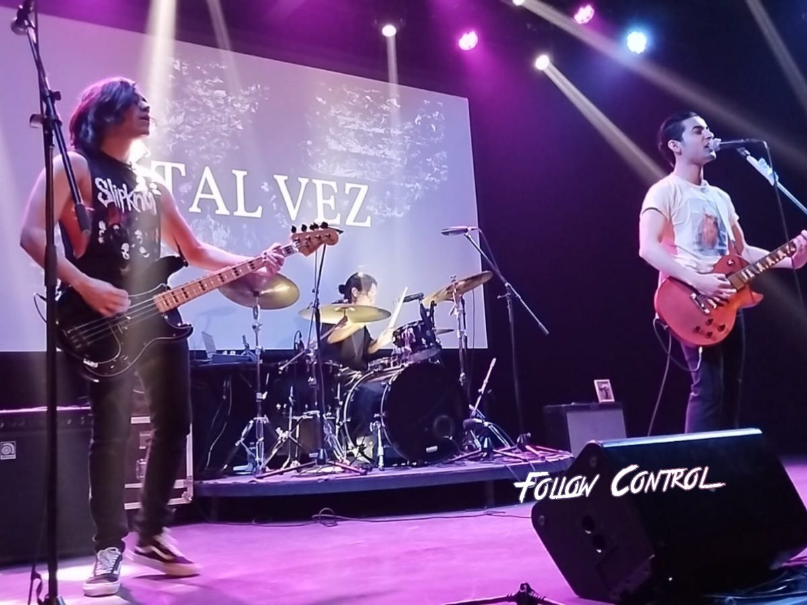
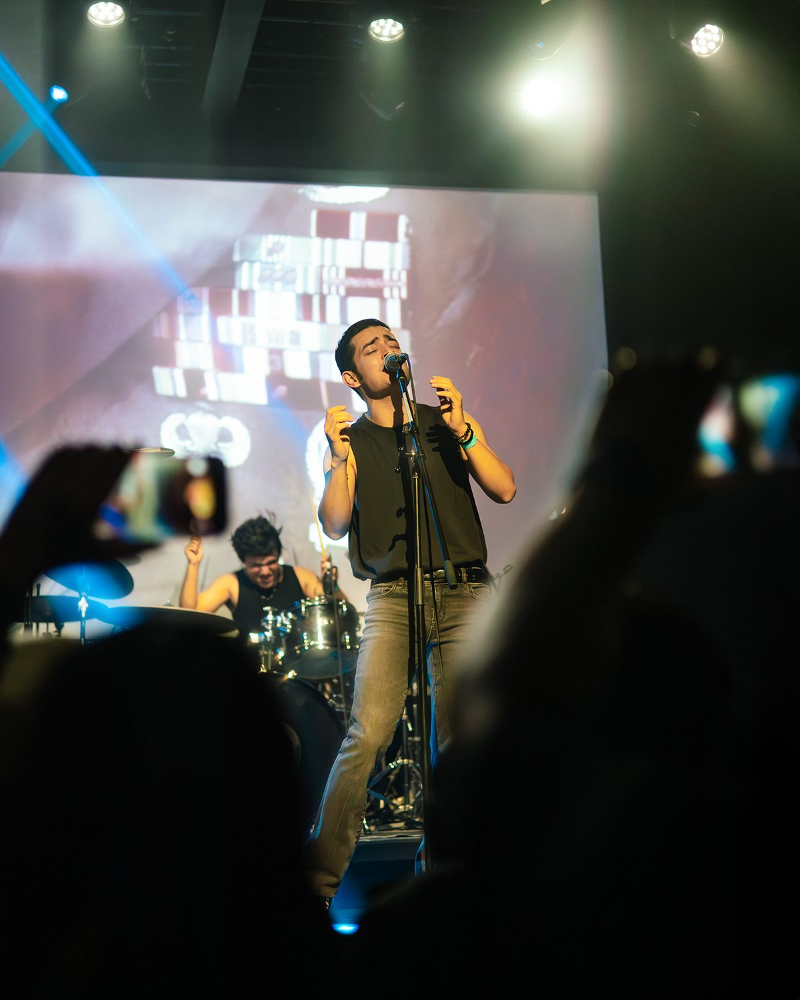

René en vivo, luces azules
Foto: Balleza Photography
“Diezell | INSANIA”, Behance, 9 feb 2026
Ver fuente ↗


INSANIA · 2025
Portada oficial
Spotify ↗
El segundo álbum · Ya disponible
INSANIA — 2025
Diez canciones sobre vulnerabilidad, culpa, nostalgia y duelo.
“Hace frío aquí, no pude salir.” — Suspensión…
“Hace frío aquí, no pude salir.”
En vivo
La banda sobre el escenario

René, puño en alto, luces azules
Foto: Balleza Photography
“Diezell | INSANIA”, Behance, 9 feb 2026
Ver fuente ↗

Bernie y su guitarra rosa
Foto: Balleza Photography
“Diezell | INSANIA”, Behance, 9 feb 2026
Ver fuente ↗

Diezell en Foro Tims, “TAL VEZ”
Foto: Follow Control, enero 2024
Leer la nota ↗

Mau, bajo y voz, en blanco y negro
Foto: Balleza Photography
“Diezell | INSANIA”, Behance, 9 feb 2026
Ver fuente ↗

René cantando, Emmash en la batería
Foto: Balleza Photography
“Diezell | INSANIA”, Behance, 9 feb 2026
Ver fuente ↗

Bernie bajo luz roja
Foto: Balleza Photography
“Diezell | INSANIA”, Behance, 9 feb 2026
Ver fuente ↗
Caóticos unidos, jamás serán vencidos
La comunidad de fans de Diezell. Luces azules, pancarta y canciones a todo pulmón.
Datos · 15 nov 2026
La banda sigue creciendo
44,147oyentes mensuales en Spotify−675 vs. 8 nov (−1.5%)
16,534seguidores en Spotify
1,678,233“El Cuento De Aquel Imperfecto Ser”, su canción más escuchada